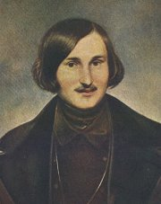

|
REALISTICKÉ DRAMA
Autoøi realistickıch divadelních her se soustøedili na mezilidské vztahy. Zamìøují se na konfliktní situace a nedorozumìní v komunikaci. Dùleitá pro nì byla psychologie postav. Stejnì jako realistiètí prozaikové si všímají negativních spoleèenskıch jevù a jejich dopadu na jedince. Dìj divadelních her je uvìøitelnı, prostøedí konkrétní, námìty souèasné a postavy reprezentují bìné typy. Nìkdy pouívají nespisovná slova nebo mluví náøeèím, které je pro danou oblast typické. Dramata ji nejsou veršovaná. Autoøi píšou prózou, protoe je bliší bìné mluvì. Vedle tragédií vznikají i komedie, pøedevším satirické.
Skuteènost napodobovala i reie nebo jevištní vıprava – scéna, kulisy, rekvizity a kostımy se mìly co nejvíce pøiblíit realitì. Herci jedli na jevišti skuteèné pokrmy, studovali chování obyèejnıch lidí v konkrétních situacích a napodobovali ho.
|
Antonín Gareis mladší: Hráèi karet
|
Nikolaj Vasiljeviè Gogol
(1809-1852)
Ruskı spisovatel Gogol psal povídky z ukrajinského prostøedí, odkud pocházel jeho otec (spisovatel a historik) a kde proil své dìtství. Gogol zaloil tradici vylíèení Petrohradu jako pøízraèného mìsta. Napsal satirické komedie Revizor, enitba a Hráèi. Je autorem povídky Pláš nebo povídkovıch sbírek Mirhorod (Taras Bulba) a Petrohradské povídky (Bláznovy zápisky), ve kterıch líèí Petrohrad jako pøízraèné mìsto. Román Èièikovova dobrodruství aneb Mrtvé duše bohuel nedokonèil.
|
Nikolaj Vasiljeviè Gogol: Revizor
Hlavním hrdinou satirické komedie Revizor je podvodník Chlestakov, kterı pøijídí do zapadlého malomìsta. Jeho obyvatelé se dozvìdí, e má mìsto tajnì navštívit vysokı úøedník z Petrohradu, a Chlestakova si s revizorem spletou. Gogol mistrnì vyjadøuje špatné svìdomí jednotlivıch úøedníkù, kteøí se snaí zakrıt vlastní podvody nebo získat rùzné vıhody. Vıznamní pøedstavitelé mìsta se pøed Chlestakovem poniují a snaí se ho podplatit. Ten vyuívá všech vıhod, bezostyšnì se dvoøí manelce hejtmana, u kterého je ubytován, a pøed odjezdem se zasnoubí s jeho dcerou. Kdy všichni zjistí z Chlestakovova dopisu, e šlo o podvodníka, pøijídí novı revizor...
|

Jak dosahuje Gogol komického úèinku?
Charakterizuj Chlestakova.
Gogolovu satiru uvádí motto „Nevrè, brachu, na zrcadlo, kdy máš køivou hubu.“. Co je motto?
Najdi literární díla, která jejich autoøi uvedli vlastním nebo cizím mottem. Co chtìli mottem vyjádøit?
|
Anton Pavloviè Èechov
(1860-1904)
Ruskı dramatik Èechov pùvodnì vystudoval lékaøskou fakultu. Psal humoristické a satirické prózy – Pestré povídky, jednoaktovky – Medvìd, psychologické povídky – Chameleon, Souboj, Pavilón è. 6, Dáma s psíèkem nebo Èernı mnich a divadelní hry – Racek, Strıèek Váòa, Tøi sestry, Višòovı sad.
Co je jednoaktovka?
Èechovovy hry inscenoval v divadle MCH(A)T jeho zakladatel Stanislavskij. Co o tomto reisérovi víš?
|
Anton Pavloviè Èechov: Višòovı sad
Tragikomedie Višòovı sad popisuje osudy obyvatel venkovského sídla, kteøí se tìce vypoøádávají se spoleèenskımi zmìnami. Ljubov Andrejevna Ranìvská s dcerou Aòou se vracejí z paøíského pobytu do Ruska, protoe jim došly peníze. Rodinné panství, o které se stará její nevlastní dcera Varja, je na pokraji krachu. Jedinou moností je prodat pozemky vèetnì višòového sadu. Ten je ale pro sentimentální Ranìvskou nedotknutelnım symbolem dìtství. Pøi drabì koupí celé panství zbohatlík Lopachin, bıvalı poddanı, kterı se uchází o Varju. Ta ho ale odmítne. Nakonec se Ranìvská vrací do Paøíe spoleènì s Aòou a vìènım studentem Péou Trofimovem. Nemocného sluhu Firse èeká smrt v opuštìném domì, protoe na nìj všichni zapomnìli...
|
Jak na tebe pùsobí dialogy v ukázce?
Co si myslíš o jednotlivıch postavách?
Najdi v Èechovovì høe tragické i komické prvky.
|
Henrik Ibsen (1828-1906)
Norskı dramatik Henrik Ibsen strávil 30 let v Itálii a Nìmecku. Pracoval jako reisér a zároveò psal divadelní hry. Nejprve romantické, pozdìji historické a realistické. K nejznámìjším patøí Domov loutek (Nora) nebo pohádkové drama Peer Gynt a dále divadelní hry Spolek mladıch, Opory spoleènosti, Strašidla, Nepøítel lidu, Divoká kachna nebo Kdy z mrtvıch procitáme.
Kritikové naøkli Ibsena, e rozbíjí rodiny a popírá základní hodnoty, a snaili se jeho hry zakázat. Pro Ibsenovy zastánce se naopak staly symbolem boje za enskou emancipaci. Sám autor ale tyto zjednodušené interpretace odmítal. Co si o jeho hrách myslíš ty?
Mùe umìlecké dílo nìkoho napravit nebo zkazit? Jak?
|
Henrik Ibsen: Domov loutek (Nora)
Komorní drama Domov loutek je známìjší pod køestním jménem jeho hlavní postavy. Noru Helmerovou vydírá propuštìnı bankovní úøedník Krogstadt. Ví, e Nora podepsala jménem mrtvého otce falešnou smìnku, a kdy zjistil, e byl její manel Torvald jmenován øeditelem banky, chce své místo zpìt. Zdánlivì idylické manelské souití dostává trhliny. Torvald o manelèinì podvodu nevìdìl a je pøekvapen její samostatností, protoe dosud hrála roli pasivní eny a bezbranné loutky. Problém se smìnkou, kterou Nora tajnì splácela, se sice vyøeší, ale ostré støetnutí s manelem øeší Nora odchodem od rodiny. Rozhodla se postavit na vlastní nohy a chce najít sama sebe.
|

Má ena právo opustit své dìti? Proè? Za jakıch podmínek?
Jak bys øešil/a rodinnı konflikt ty?
Co pro tebe znamená rodina?
Kdy chceš zaloit vlastní rodinu? S kım a proè?
Jak budeš vychovávat své dìti?
Kdo je dùleitìjší pro vıchovu dìtí otec nebo matka?
Co si myslíš o rozvodech?
Mìli by rodièe zùstávat spolu jenom kvùli dìtem?
|
Ladislav Stroupenickı
(1850-1892)
Stroupenickı se narodil v Cerhonicích u Písku a zemøel v Praze. Pracoval jako dramaturg Národního divadla. Psal realistická dramata – Naši furianti, Václav Hrobèickı z Hrobèic a Na valdštejnské šachtì i historické hry – Zvíkovskı rarášek a Paní mincmistrová. Jejich hlavní postavou je renesanèní básník a bouølivák Mikuláš Daèickı z Heslova. Stroupenickı se vìnoval rovnì humoristické a realistické povídkové tvorbì.
Vysvìtli vıznam slova furiant.
Co víš o Daèickém?
Stroupenickı se vyhıbal portrétování, protoe si v mládí zohavil oblièej (ustøelil si nos) pøi pokusu o sebevradu. Zjisti, proè se chtìl zabít.
|
Ladislav Stroupenickı: Naši furianti
Èinohra Naši furianti se odehrává roku 1869 v jihoèeské vesnici Honice. Ústøední zápletku tvoøí spor o místo ponocného mezi vyslouilım vojákem Bláhou a krejèím Fialou, kterı má 7 dìtí. Pøed jednáním obecního vıboru se najde anonymní dopis, jeho pisatel poaduje, aby byl zvolen Bláha, jinak vesnici vypálí. Podezøení padne na Bláhu, a tak se ponocnım stává Fiala, vzápìtí se ovšem ukáe, e psaní nadiktoval své dceøi. Místo získává Bláha a rozhádaní vesnièané nakonec urovnají všechny malicherné spory. Rodièe pøestanou bránit Václavovi a Verunce ve svatbì, švec Habršperk neudá sedláka Buška, e pytlaèil, a Fialùv dopis je spálen.
Premiéra této první èeské realistické hry v Národním divadle roku 1887 vzbudila odpor divákù i kritiky. Vadilo jim, e drama nemá kladnou postavu, 2. dìjství se odehrává v hospodì, kde herci „realisticky“ mlátí do stolu a plivají na zem, a e Stroupenickı uvedl na jevištì „vesnickou špínu“.
|
Aleš: Ladislav Stroupenickı
Charakterizuj jazyk jednotlivıch postav.
Co si myslíš o námìtu a zpracování hry?
Jakı je tvùj názor na pisatele anonymních dopisù?
Kde se v souèasné dobì mùeme bìnì setkat s anonymními názory?
Jakı je rozdíl mezi anonymem, pseudonymem, pøezdívkou a nickem?
|
Gabriela Preissová
(1862-1946)
Preissová pocházela z Kutné Hory, zemøela v Praze. Psala prózy z prostøedí Slovácka a dramata s vıraznımi enskımi hrdinkami – Gazdina roba a Její pastorkyòa. Po negativním ohlasu kritiky se Preissová uchılila k nekonfliktní zábavné tvorbì pro eny. Svım dramatùm dala rovnì románovou podobu.
Leoš Janáèek (1854-1928) zhudebnil Její pastorkyni pomocí své originální metody tzv. nápìvkù mluvy. Jako libreto pouil pøímo text hry Gabriely Preissové, nemuselo tudí vznikat nové veršované libreto, jak je v operách zvykem.
Co je nápìvková mluva?
|
Gabriela Preissová: Její pastorkyòa
Tragédie Její pastorkyòa popisuje hrùznı èin staré mlynáøky Kostelnièky. Její schovanka Jenùfa se zamilovala do lehkomyslného Števy a èeká s ním dítì. O Jenùfu se uchází také jeho nevlastní bratr Laca, kterı jí v záchvatu árlivosti zohaví køivákem oblièej. Kostelnièka se snaí Jenùfu zachránit pøed hanbou, a proto její dítì brzy po narození utopí. Pastorkyni øekne, e zemøelo. Zloèin nezùstane utajen a Kostelnièka se nakonec k vradì pøizná. Všichni poznají Števovu pravou tváø a Laca s Jenùfou opouštìjí vesnici.
|
Vysvìtli vıznam neobvyklıch slov v názvech her Gabriely Preissové a v textu ukázky.
Jakı je tvùj názor na chování Števy a Laci?
Co si myslíš o èinu Kostelnièky?
Jakımi zpùsoby lze dnes øešit nechtìné tìhotenství? Bylo tomu tak i v minulosti?
|
Bratøi Mrštíkové

Bratøi Mrštíkové se narodili v Jimramovì. Spoleènì vydávali èasopis Moravskoslezská revue, napsali románovou kroniku Rok na vsi a tragédii Maryša. Alois (1861-1925) pùsobil jako venkovskı uèitel, zemøel v Brnì. Vilém (1863-1912) se ivil psaním. Je autorem románù Pohádka máje nebo Santa Lucia a broury proti bezohledné asanaci Prahy Bestia triumphans. Udroval pomìr s malíøkou Zdenkou Braunerovou, která mu ilustrovala knihy. Podepsal manifest Èeské moderny. Spáchal sebevradu u bratra v Divácích u Hustopeèí, kam se na sklonku ivota uchılil. Román Zumøi u nedokonèil.
|
Bratøi Mrštíkové: Maryša
Tragédie Maryša se odehrává na slováckém venkovì.
Maryšu Lízalovou nutí její rodièe, aby se vdala za mlynáøe Vávru. Ta ale miluje Francka a slíbila mu, e na nìj poèká, ne se vrátí z vojny. Rodièe nakonec Maryšu ke sòatku s Vávrou donutí. Brzy se ale ukáe, e stárnoucí vdovec se tøemi dìtmi touil hlavnì po jejím vìnu. Starı Lízal odmítne Vávrovi vìno vydat. Kdy se po dvou letech vrátí Francek z vojny, znovu se uchází o Maryšu a Vávra po nìm vystøelí. Nešastná Maryša nasype manelovi do kávy otrušík a vzápìtí se pøizná, e ho otrávila.
Další realistiètí dramatikové
Alexandr Nikolajeviè Ostrovskij: Bouøe
Alois Jirásek: Kolébka, Vojnarka, Otec
|
Kterım náøeèím se mluví na Slovácku? V èem se liší od spisovné èeštiny?
Srovnej toto náøeèí s ukázkou z Maryši.
Braunerová: Bestia triumphans
Pøelo do èeštiny název knihy Bestia triumphans.
|
Internetové stránky
Ibsen
Ibsen
Ibsen
Ibsen
Janáèek, hudební skladatel
Mrštíkové
Klub Za starou Prahu
Filmy
Cech panen kutnohorskıch, reie O.Vávra
Naši furianti, scénáø V.Vanèura
Opera
Její pastorkyòa, L.Janáèek
Exkurze
Památník Leoše Janáèka
|
Doporuèená èetba
Brockett, Oscar G.: Dìjiny divadla, pøel. M.Lukeš, NLN, Praha 1999
Cigánek, Jan: A.P.Èechov, Orbis, Praha 1964
Èechov, Anton Pavloviè: Dramata, Odeon, Praha 1988
Deset z Národního, Albatros, Praha 1983
Gogol, Nikolaj Vasiljeviè: Hry a aktovky, Cylindr, Hradec Králové 2002 (Revizor, enitba, Hráèi...)
Gogol a naše doba, Praha 1984
Ibsen, Henrik: Nora, pøel. Kraus, Rak, Praha 1957
Jirásek, Alois: Husitská trilogie, SNKLHU, Praha 1955 (Jan Hus, Jan ika, Jan Roháè)
Jirásek, A.: Vojnarka, Otec, Lucerna, SNKLHU, Praha 1955
Justl, Vladimír: Bratøi Mrštíkové, Praha 1963
Kejzlar, Radko: Dìjiny norské literatury (2 svazky), Academia, Praha 1967
Lukavskı, Radovan: Stanislavského metoda herecké práce, SPN, Praha 1978
Martínek, K.: Ruské klasické drama a divadlo, Praha 1981
Müller, Vladimír: Ladislav Stroupenickı, Praha 1949
Preissová, Gabriela: Její pastorkyòa, Orbis, Praha 1957
Preissová, G.: Plánì a jiné povídky, SNKLU, Praha 1962
Sekera, Jaroslav: Èernı mnich, A.P.Èechov – osobnost a dílo, Tilia, Praha 2002
Skaftymov, A.P.: O konfliktu her A.P.Èechova, Praha 1961
Slovník severskıch spisovatelù, Libri, Praha 1998
Spisy Henrika Ibsena (4 svazky), SNKLHU
Stanislavskij, K.S.: Reisérskı plán Othella, Orbis, Praha 1954
Stanislavskı, K.S.: Mùj ivot v umìní, Praha 1986
Stroupenickı, Ladislav: Naši furianti, Umìní lidu, Praha 1950
Zadrail, L.: Záhadnı Gogol, Praha 1972
Závodskı, Artur: Gabriela Preissová, Praha 1962
|
Vypracuj písemnı referát o nìkteré z uvedenıch knih.
Vyberte si spoleènì realistickou hru nebo její èást a zinscenujte ji v duchu realismu.
Bedøich Havránek: Cesta listnatım lesem

Antonín Dvoøák: Dopoledne v selské jizbì (Svìtnice v Nìmèicích)
|
|